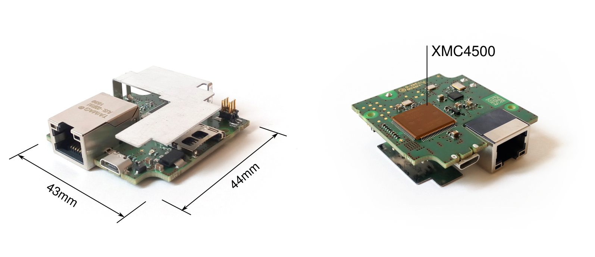
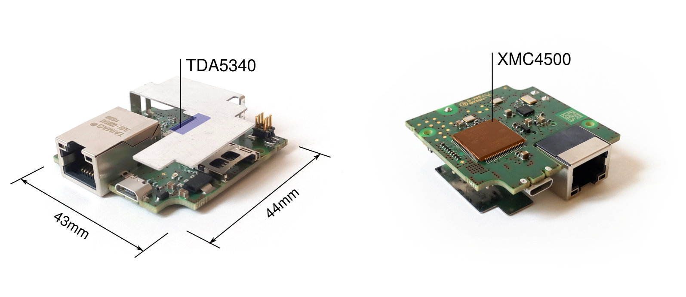
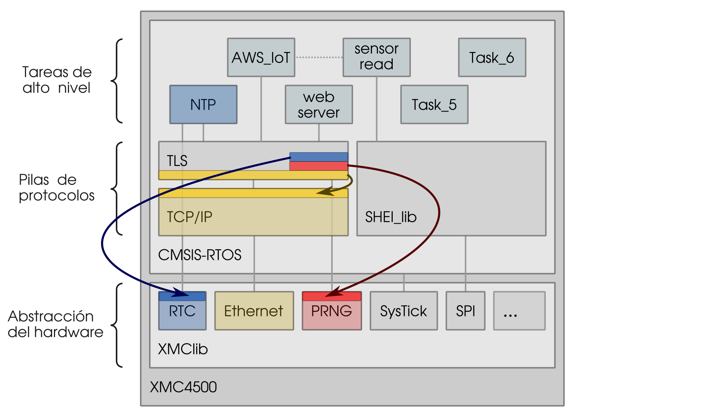

Seguridad de los Datos en Sistemas Empotrados
Cristian González Guerrero
Universidad de Granada
Máster en Ciencia de Datos e
Ingeniería de Computadores


Seguridad de los Datos en Sistemas Empotrados
A SME enabler for nationally and internationally funded projects. Offering engineering services for:
- Chip development
- Project management
- Telecommunications
- Circuit and system design
- IoT in general

Seguridad de los Datos en Sistemas Empotrados
Objetivos

Objetivos
Objetivos

Objetivos
- Establecer comunicación segura con Internet
- Revisar implementaciones TLS
- Intercambio de mensajes con AWS IoT
Seguridad de los Datos en Sistemas Empotrados
H2 miniGW

H2 miniGW
H2 miniGW
H2 miniGW

H2 miniGW

XMC4500
- Procesador: ARM Cortex-M4 (32-bit CPU)
- Flash: 1024KB
- RAM: 160KB (en 3 bloques)
- Periféricos: DAC, ADC, Ethernet, USIC, etc.
Firmware
Seguridad de los Datos en Sistemas Empotrados
Criterios de la búsqueda
- Sistemas empotrados
- Lenguaje C estándar
- Low footprint
- Compatible con el sistema
- CMSIS-RTOS y lwIP
- Seguridad
- Desarrollo continuo
- Ciphersuites AWS IoT


| VS | mbed TLS | |
|---|---|---|
| Conocido por | MySQL | |
| Verificaciones | WolfCrypt (FIPS-140 l1) |
No |
| Licencia | $5000 | Sin costo |
| Compatible | RTOS, lwIP | AWS IoT SDK |
Seguridad de los Datos en Sistemas Empotrados
Integración de mbed TLS
Encargada de establecer conexiones seguras - Encriptación (simétrica, clave pública) - Certificados (Autenticación mutua) - Protocolo (búferes, estado de la conexión...)Integración de mbed TLS

Integración de mbed TLS

Integración de mbed TLS
Integración de mbed TLS
Módulo de red
net_sockets.c
#if defined(MBEDTLS_NET_C)
#if !defined(unix) && !defined(__unix__) && !defined(__unix) && \
!defined(__APPLE__) && !defined(_WIN32) && !defined(DAVE)
#error "This module only works on Unix, DAVE and Windows, see MBEDTLS_NET_C in config.h"
#endif
#if defined(MBEDTLS_PLATFORM_C)
#include "mbedtls/platform.h"
#else
#include <stdlib.h>
#endif
#include "mbedtls/net_sockets.h"
#include <string.h>
#if (defined(_WIN32) || defined(_WIN32_WCE)) && !defined(EFIX64) && \
!defined(EFI32)
/***********
* WINDOWS *
***********/
#ifdef _WIN32_WINNT
#undef _WIN32_WINNT
#endif
/* Enables getaddrinfo() & Co */
#define _WIN32_WINNT 0x0501
#include <ws2tcpip.h>
#include <winsock2.h>
#include <windows.h>
#if defined(_MSC_VER)
#if defined(_WIN32_WCE)
#pragma comment( lib, "ws2.lib" )
#else
#pragma comment( lib, "ws2_32.lib" )
#endif
#endif /* _MSC_VER */
#define read(fd,buf,len) recv(fd,(char*)buf,(int) len,0)
#define write(fd,buf,len) send(fd,(char*)buf,(int) len,0)
#define close(fd) closesocket(fd)
static int wsa_init_done = 0;
#else /* ( _WIN32 || _WIN32_WCE ) && !EFIX64 && !EFI32 */
#if defined(DAVE)
/********
* DAVE *
********/
#include <sys/types.h>
#include <lwip/sockets.h>
#include <lwip/inet.h>
#include <unistd.h>
#include <signal.h>
#include <lwip/netdb.h>
#include <errno.h>
#else
/********
* UNIX *
********/
#include <sys/types.h>
#include <sys/socket.h>
#include <netinet/in.h>
#include <arpa/inet.h>
#include <sys/time.h>
#include <unistd.h>
#include <signal.h>
#include <fcntl.h>
#include <netdb.h>
#include <errno.h>
#endif /* DAVE */
#endif /* ( _WIN32 || _WIN32_WCE ) && !EFIX64 && !EFI32 */
#endif /* MBEDTLS_NET_C */
Fuentes de entropía

Fuentes de entropía
Aleatoriedad dada por:
- No determinismo
- Digital → Analog → Digital
- Recolección de entropía
Módulo de temporización
#include "mbedtls/platform_DAVE.h"
mbedtls_time_t mbedtls_time_DAVE( mbedtls_time_t* timer ) {
mbedtls_time_t now;
if (timer == NULL) {
timer = &now;
}
RTC_Time(timer);
return *timer;
}
Configuración de mbed TLS
Configuración mínima con ciphersuites recomendados por AWS y reducción del uso de memoria
Verificaciones
- Tests unitarios: proporcionados por mbed TLS
- Test funcional: conectar con servidor HTTPS
Programa selftest.c
Verificar recepción de 200 OK
Seguridad de los Datos en Sistemas Empotrados

Integración AWS IoT Device SDK
Integración AWS IoT Device SDK

Integración AWS IoT Device SDK

Integración AWS IoT Device SDK

Conectividad de red
Modificado fichero network_mbedtls_wrapper.c
Certificados contenidos en variables (hardcoded):
- Certificado del dispositivo
- Clave privada
- Autoridad certificadora
Temporizadores
Gestionan timeouts en las conexiones
Implementados a partir de osKernelSysTick()
Concurrencia
Implementado a partir de los mutex de RTOS
Configuración
aws_iot_config.h
#define AWS_IOT_MQTT_HOST "XXXXXX.amazonaws.com"
#define AWS_IOT_MQTT_PORT 8883
#define AWS_IOT_MQTT_CLIENT_ID "c-sdk-client-id"
#define AWS_IOT_MY_THING_NAME "AWS-IoT-C-SDK"
#define AWS_IOT_ROOT_CA ca_root
#define AWS_IOT_CERTIFICATE client_cert
#define AWS_IOT_PRIVATE_KEY client_key
Verificaciones
- Test funcional: envío de mensajes MQTT
- Test funcional: actualización de la sombra
Visualización del tráfico desde la consola
Visualización de la sombra desde la consola
Problemas encontrados
Actualizar lwIP
Modificar malloc
Seguridad de los Datos en Sistemas Empotrados
Gracias por su atención
¿Preguntas?
Slides
Not a coder? Not a problem. There's a fully-featured visual editor for authoring these, try it out at https://slides.com.
Point of View
Press ESC to enter the slide overview.
Hold down alt and click on any element to zoom in on it using zoom.js. Alt + click anywhere to zoom back out.
Touch Optimized
Presentations look great on touch devices, like mobile phones and tablets. Simply swipe through your slides.
Fragments
Hit the next arrow...
... to step through ...
... a fragmented slide.
Fragment Styles
There's different types of fragments, like:
grow
shrink
fade-out
fade-up (also down, left and right!)
current-visible
Highlight red blue green
Transition Styles
You can select from different transitions, like:
None -
Fade -
Slide -
Convex -
Concave -
Zoom
Themes
reveal.js comes with a few themes built in:
Black (default) -
White -
League -
Sky -
Beige -
Simple
Serif -
Blood -
Night -
Moon -
Solarized
Slide Backgrounds
Set data-background="#dddddd" on a slide to change the background color. All CSS color formats are supported.
Image Backgrounds
<section data-background="image.png">Tiled Backgrounds
<section data-background="image.png" data-background-repeat="repeat" data-background-size="100px">Video Backgrounds
<section data-background-video="video.mp4,video.webm">... and GIFs!
Background Transitions
Different background transitions are available via the backgroundTransition option. This one's called "zoom".
Reveal.configure({ backgroundTransition: 'zoom' })Background Transitions
You can override background transitions per-slide.
<section data-background-transition="zoom">Pretty Code
function linkify( selector ) {
if( supports3DTransforms ) {
var nodes = document.querySelectorAll( selector );
for( var i = 0, len = nodes.length; i < len; i++ ) {
var node = nodes[i];
if( !node.className ) {
node.className += ' roll';
}
}
}
}
Code syntax highlighting courtesy of highlight.js.
Marvelous List
- No order here
- Or here
- Or here
- Or here
Fantastic Ordered List
- One is smaller than...
- Two is smaller than...
- Three!
Tabular Tables
| Item | Value | Quantity |
|---|---|---|
| Apples | $1 | 7 |
| Lemonade | $2 | 18 |
| Bread | $3 | 2 |
Clever Quotes
These guys come in two forms, inline: The nice thing about standards is that there are so many to choose from
and block:
“For years there has been a theory that millions of monkeys typing at random on millions of typewriters would reproduce the entire works of Shakespeare. The Internet has proven this theory to be untrue.”
Intergalactic Interconnections
You can link between slides internally, like this.
Speaker View
There's a speaker view. It includes a timer, preview of the upcoming slide as well as your speaker notes.
Press the S key to try it out.
Export to PDF
Presentations can be exported to PDF, here's an example:
Global State
Set data-state="something" on a slide and "something"
will be added as a class to the document element when the slide is open. This lets you
apply broader style changes, like switching the page background.
State Events
Additionally custom events can be triggered on a per slide basis by binding to the data-state name.
Reveal.addEventListener( 'customevent', function() {
console.log( '"customevent" has fired' );
} );
Take a Moment
Press B or . on your keyboard to pause the presentation. This is helpful when you're on stage and want to take distracting slides off the screen.
Much more
- Right-to-left support
- Extensive JavaScript API
- Auto-progression
- Parallax backgrounds
- Custom keyboard bindings